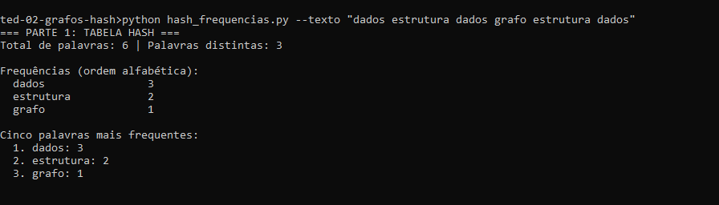
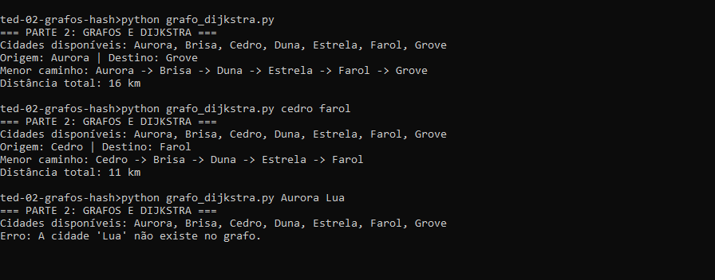
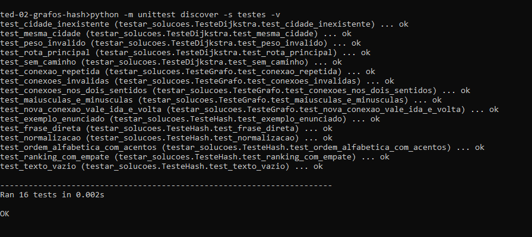

Disciplina: Estruturas Avançadas de Dados
Dupla: Pedro Vitor Rocha Do Val e Matheus de Brito Araujo
Turma: 4º ano de Sistemas de Informação
Professor: Alex
Parte 1: ler um texto, normalizar as palavras e calcular suas frequências utilizando tabela hash. Parte 2: modelar sete cidades fictícias conectadas por distâncias positivas e calcular o menor caminho entre duas delas com o algoritmo de Dijkstra.
O programa recebe um arquivo TXT em UTF-8 ou uma frase (--texto), converte o conteúdo para minúsculas com casefold(), identifica as palavras por expressão regular e atualiza um dicionário Python: frequencias[palavra] = frequencias.get(palavra, 0) + 1. A saída mostra todas as frequências em ordem alfabética e um ranking das cinco palavras mais frequentes, com desempate alfabético. A ordenação ignora acentos.
O conjunto de dados é um texto sobre estruturas de dados com 1.097 palavras, das quais 465 são distintas. As cinco mais frequentes são: o (54), a (53), de (40), e (31) e uma (24).
A consulta ou inserção no dicionário tem custo médio O(1) por palavra; assim, contar n palavras leva O(n) em média. No pior caso, com muitas colisões, uma operação pode chegar a O(k), em que k é o número de palavras distintas. A ordenação para exibição custa O(k log k), e o armazenamento utiliza O(k) de espaço.
O cenário usa sete localidades fictícias: Aurora, Brisa, Cedro, Duna, Estrela, Farol e Grove. Cada conexão é bidirecional e tem peso positivo hipotético em quilômetros. A lista de adjacência é um dicionário no qual cada cidade aponta para um dicionário de vizinhos e distâncias. Cada estrada é declarada uma única vez em CONEXOES, e a função construir_grafo() registra a ida e a volta.
| Cidade A | Cidade B | Distância (km) |
|---|---|---|
| Aurora | Brisa | 4 |
| Aurora | Cedro | 3 |
| Brisa | Cedro | 1 |
| Brisa | Duna | 5 |
| Cedro | Duna | 8 |
| Cedro | Estrela | 10 |
| Duna | Estrela | 2 |
| Duna | Farol | 6 |
| Estrela | Farol | 3 |
| Estrela | Grove | 7 |
| Farol | Grove | 2 |
Dijkstra inicia a origem com distância zero e os demais nós com infinito. A cada passo, extrai da fila de prioridade a cidade com menor distância conhecida e relaxa suas arestas: se passar por ela reduz a distância de um vizinho, registra a nova distância e o predecessor. Ao final, reconstrói a rota pelos predecessores. A implementação usa heapq, com complexidade usual O((V + E) log V) e espaço O(V + E).
| Cidade retirada | Distância | Distâncias atualizadas |
|---|---|---|
| Aurora | 0 | Brisa = 4; Cedro = 3 |
| Cedro | 3 | Duna = 11; Estrela = 13 |
| Brisa | 4 | Duna = 9 |
| Duna | 9 | Estrela = 11; Farol = 15 |
| Estrela | 11 | Farol = 14; Grove = 18 |
| Farol | 14 | Grove = 16 |
| Grove | 16 | destino alcançado |
Caminho mínimo: Aurora → Brisa → Duna → Estrela → Farol → Grove. Distância total: 4 + 5 + 2 + 3 + 2 = 16 km.
Há um segundo caminho de 16 km, por Aurora → Cedro → Brisa (3 + 1 = 4 km). O programa mantém o primeiro encontrado, pois só troca uma distância quando a nova é estritamente menor. Ambos são respostas corretas.
Há dezesseis testes automatizados. Na tabela hash: exemplo do enunciado, normalização, texto vazio, ordem alfabética com acentos, ranking com empate e frase direta. No grafo: conexões nos dois sentidos, inclusão de nova conexão, conexões inválidas ou repetidas e nomes em maiúsculas ou minúsculas. No Dijkstra: rota principal, origem igual ao destino, ausência de caminho, cidade inexistente e peso inválido. Todos passaram. As saídas completas estão na pasta evidencias/.



A principal decisão foi empregar dict para a tabela hash e dicionário de dicionários para a lista de adjacência, permitindo leitura direta das conexões. A fila de prioridade evita procurar linearmente o menor valor a cada iteração. Como limitações, o exemplo utiliza pesos hipotéticos e a normalização não remove palavras comuns, como artigos e preposições. Apenas a biblioteca padrão de Python é utilizada.
Acentos na ordenação: a ordenação padrão compara códigos Unicode e colocava “água” e “única” depois de “zero”. A solução foi ordenar por uma versão da palavra sem acentos, mantendo a original na exibição.
Texto de entrada: um texto formado por um parágrafo repetido deixava quase todas as palavras empatadas. Ele foi substituído por um texto sem repetição de parágrafos, com frequências variadas.
Execução dos testes: os testes só funcionavam com o comando executado na pasta raiz. O arquivo passou a localizar os programas pelo próprio caminho.
Conexões de mão única: quando a estrada era escrita separadamente em cada cidade, esquecer um dos lados deixava a volta com distância diferente, sem aviso. Declarar a estrada uma vez e gerar os dois sentidos eliminou o problema.
Caminhos empatados: a menor distância é única, mas o percurso que a alcança pode não ser.